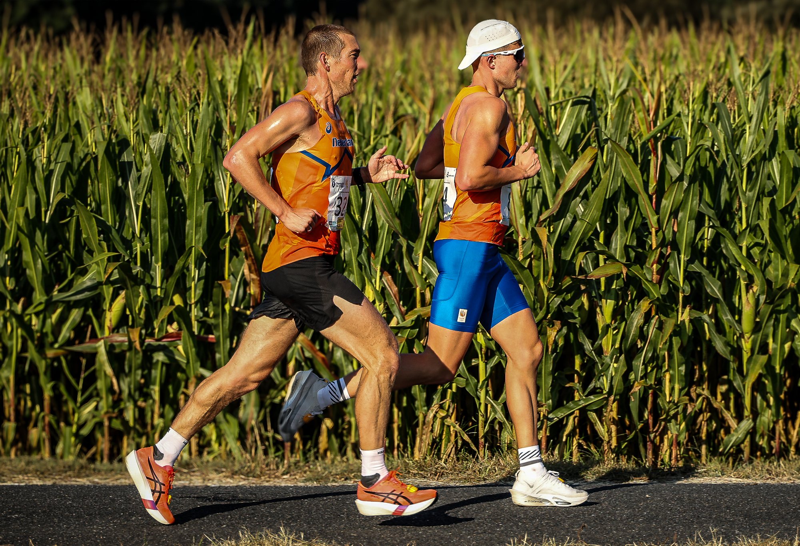

Charlie Lawrence and Courtney Olsen won the men’s and women’s titles at the IAU 100 km World Championships in Ames, A Coruña, on 20 September 2026. Bertamiráns hosted the start of a race that brought international ultrarunning to Galicia, alongside the WMA masters championship.
Lawrence finished in 6:09:25, ahead of Lithuania’s Aleksandr Sorokin in 6:12:41 and Great Britain’s Alex Milne in 6:17:50. Olsen completed an American sweep of the individual titles in 7:10:31, with Japan’s Miho Nakata second in 7:11:57.
A Spanish podium on home roads
Gemma Arenas took women’s bronze in 7:17:50. The Spanish athletics federation reported the performance as a national 100 km record. Spain also claimed silver in the women’s team competition, behind Croatia and ahead of Finland; the United States won the men’s team title.

The race started at 08:30 and required 20 laps of a circuit of approximately five kilometres. Image Media’s photographs show the championship beyond the finish line: runners passing through shaded roads and alongside fields around Bertamiráns.
Image Media coverage
Reporting: IM News Editorial Desk
Coverage photographers: Thainá Duete and Michael Rosa / Image Media
Event details and results checked against IAU, RFEA and the official event website. Both photographs in this report are by Michael Rosa.